Лекция 5. FishNet: архитектура, Observers и миграция
Переход от NGO к продакшен-фреймворку
Эта лекция открывает второй блок курса. Базовый прототип на Unity NGO уже собран, и теперь мы переходим к FishNet — более гибкому фреймворку с декомпозированной архитектурой, встроенным Prediction-ready стеком и системой видимости объектов (Observers), которой в NGO нет.
FishNetSyncVarObserversRpcTargetRpcDistanceConditionArea of InterestNGO → FishNet
1. Карта занятия и повторение
После первых трёх лекций студент уже умеет собирать мультиплеерный прототип на NGO: подключение, синхронизацию переменных, движение, ownership, камеру и серверную стрельбу. Лекция 5 открывает следующий уровень — миграцию на FishNet и работу с возможностями, которых в NGO нет.
Что уже знаем
NetworkVariable, ServerRpc, ClientRpc, IsOwner, NetworkTransform, серверный спавн и guard-клозы валидации.
Что пока не умеем
Работать с FishNet, ограничивать видимость объектов по расстоянию, применять SyncVar, ObserversRpc и Observer Conditions.
К чему идём
К проекту, переведённому на FishNet, с системой Observer-видимости и понятной базой под Prediction из следующей лекции.
Карта занятия
Блок 1: зачем вообще выходить за пределы NGO и что FishNet даёт в продакшене.
Блок 2: архитектура FishNet и transport-слой.
Блок 3:SyncVar, SyncList, SyncDictionary, SyncHashSet.
Блок 4:ObserversRpc, TargetRpc и Observer Conditions.
Блок 5: инженерный чек-лист миграции NGO → FishNet.
Проверка понимания
Если вы уверенно пишете ServerRpc с валидацией, понимаете, зачем нужен OnNetworkSpawn(), и различаете IsOwner и IsServer, то вход в эту лекцию у вас уже есть.
2. Почему не только NGO
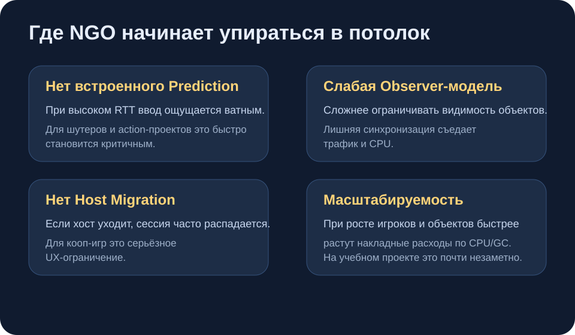
NGO отлично подходит для обучения и прототипов, но при росте масштаба появляются архитектурные ограничения.
Сильные стороны NGO
Официальный стек Unity с долгосрочной поддержкой и понятной документацией.
Бесплатная интеграция с Relay, Lobby и Matchmaking.
Очень хороший вход для обучения мультиплееру и сборки первых прототипов.
Где начинаются ограничения
Нет встроенного Prediction: при высоком пинге отзывчивость быстро деградирует.
Слабая observer-модель: без предметной системы relevancy сложнее экономить трафик.
Нет Host Migration: при выходе хоста сессия разваливается.
Масштабируемость: при росте числа клиентов и объектов быстрее накапливаются расходы по CPU и GC.
Важно
Это не отменяет ценность NGO. Он отлично решает задачу старта и учебной базы. Просто на следующем уровне требований индустрия часто уходит в более специализированные решения.
3. FishNet: мотивация и бенчмарки
Архитектура
Вместо одной перегруженной точки входа FishNet раскладывает сеть по менеджерам: сервер, клиент, транспорт, время, observability и prediction.
Производительность
Меньше аллокаций и ниже GC pressure. На больших сценах это быстро превращается из теории в реальную экономию кадра.
Возможности
Prediction, мощные Observers, несколько транспортов, гибкий жизненный цикл и более явная работа с AOI.
Сравнение производительности
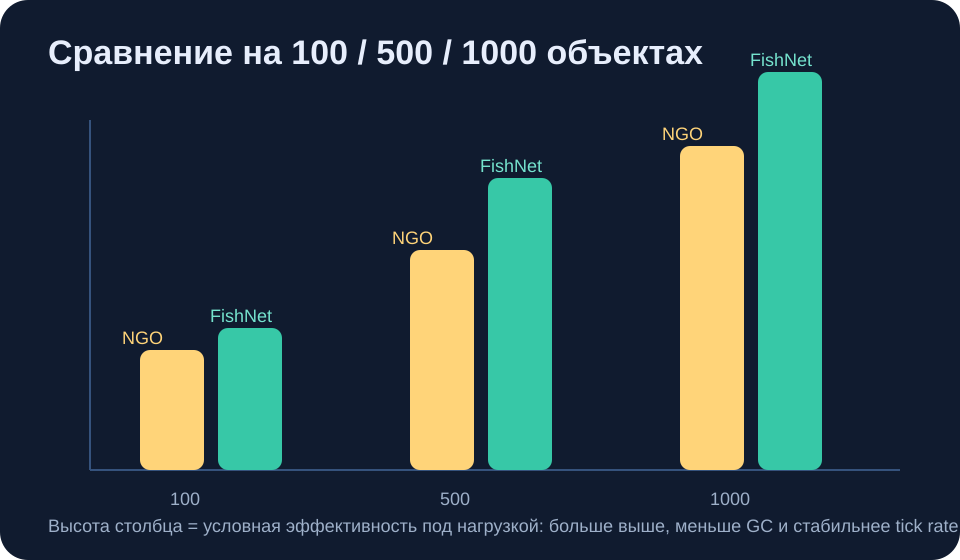
При малом количестве объектов разницы почти не видно. При масштабировании FishNet выигрывает заметно сильнее.
FishNet распространяется по MIT-лицензии, активно развивается сообществом и используется в реальных коммерческих проектах. Для нас важно не «кто круче», а то, что этот стек даёт более инженерно зрелый набор инструментов.
4. Архитектура FishNet
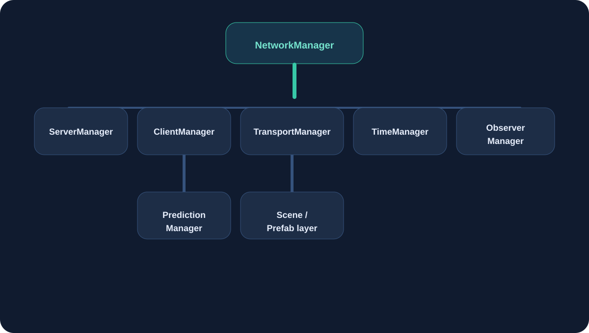
FishNet разносит сетевую ответственность по специализированным менеджерам.
NetworkManager: точка входа, но не жесткий singleton.
ServerManager: серверная логика, подключения, spawn и despawn.
ClientManager: локальное клиентское соединение и обработка собственного состояния.
TransportManager: абстракция транспорта, изолирующая игру от конкретного сетевого канала.
TimeManager: сетевой тик, Tick, TickDelta и всё, что критично для prediction.
ObserverManager: правила видимости и Area of Interest.
PredictionManager: база для Replicate / Reconcile и клиентского предсказания.
Сравнение с NGO
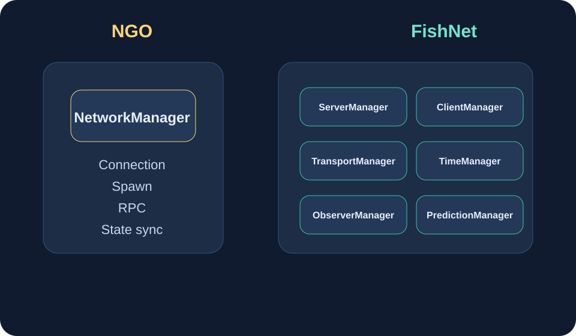
NGO собирает больше логики вокруг одного центра. FishNet декомпозирует систему и снижает архитектурную связанность.
5. Transport: Tugboat, Bayou, Multipass
Tugboat (UDP)
Основной транспорт по умолчанию. Даёт минимальную задержку и по смыслу ближе всего к UnityTransport из NGO.
Bayou (WebSocket)
Полезен для WebGL и браузерных сборок, где нужен стек поверх ограничений браузера.
Multipass
Позволяет держать несколько транспортов одновременно: например, Tugboat для desktop и Bayou для web-клиентов.
Ключевая мысль: транспорт — это конфигурация. Логика игры не должна переписываться только потому, что вы меняете конкретный способ доставки пакетов.
6. Жизненный цикл NetworkBehaviour
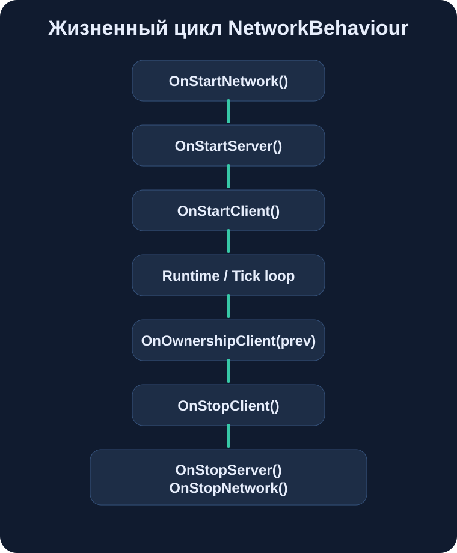
В FishNet серверная и клиентская инициализация разделены отдельными методами.
OnStartNetwork() — объект зарегистрирован в сети.
OnStartServer() — только серверная инициализация.
OnStartClient() — клиентская инициализация для каждого клиента.
OnOwnershipClient(prev) — реакция на передачу владения.
Вместо одного OnNetworkSpawn() появляется более точное разделение ответственности.
Серверную и клиентскую инициализацию больше не нужно смешивать в одном методе.
На смену ручному отслеживанию ownership приходит встроенный OnOwnershipClient(prev).
Критический нюанс
Если вы переопределяете lifecycle-методы FishNet, не забывайте вызывать base.OnStartClient() и другие соответствующие base-методы. Иначе внутренняя инициализация фреймворка будет неполной.
7. SyncVar — замена NetworkVariable
[SyncVar] — это более декларативная форма state sync. Вам не нужен отдельный контейнер NetworkVariable<T>; вы описываете обычное поле и задаёте правила синхронизации атрибутом.
NGO (Лекция 2)
public NetworkVariable<int> health = new(100,
NetworkVariableReadPermission.Everyone,
NetworkVariableWritePermission.Server);
public override void OnNetworkSpawn() {
health.OnValueChanged += OnHealthChanged;
OnHealthChanged(0, health.Value);
}
public override void OnNetworkDespawn() {
health.OnValueChanged -= OnHealthChanged;
}
FishNet
[SyncVar(OnChange = nameof(OnHealthChanged))]
public int health = 100;
private void OnHealthChanged(int prev, int next, bool asServer) {
UpdateHealthUI(next);
}
Права доступа
ReadPermission.Observers по умолчанию: значение видят наблюдатели объекта.
ReadPermission.OwnerOnly: подходит для приватных данных вроде инвентаря или скрытых статов.
WritePermission.ServerOnly по умолчанию: сервер остаётся источником истины.
Аналогия с NGO permissions
Те же read/write-ограничения задаются прямо на атрибуте. По смыслу модель знакомая, просто синтаксис короче.
[SyncVar(WritePermission = WritePermission.ServerOnly,
ReadPermission = ReadPermission.Observers)]
public int score = 0;
8. SyncList, SyncDictionary, SyncHashSet
SyncList — замена NetworkList с гранулярными колбэками
public readonly SyncList<InventorySlot> inventory = new();
inventory.OnChange += (SyncListOperation op, int index,
InventorySlot oldItem, InventorySlot newItem, bool asServer) => {
switch (op) {
case SyncListOperation.Add: UpdateSlotUI(index, newItem); break;
case SyncListOperation.RemoveAt: RemoveSlotUI(index); break;
case SyncListOperation.Set: UpdateSlotUI(index, newItem); break;
case SyncListOperation.Clear: ClearAllSlotsUI(); break;
}
};
Ключевая выгода у всех сетевых коллекций одна: по сети передаётся дельта, а не весь контейнер целиком.
9. RPC: ObserversRpc, TargetRpc и маппинг с NGO
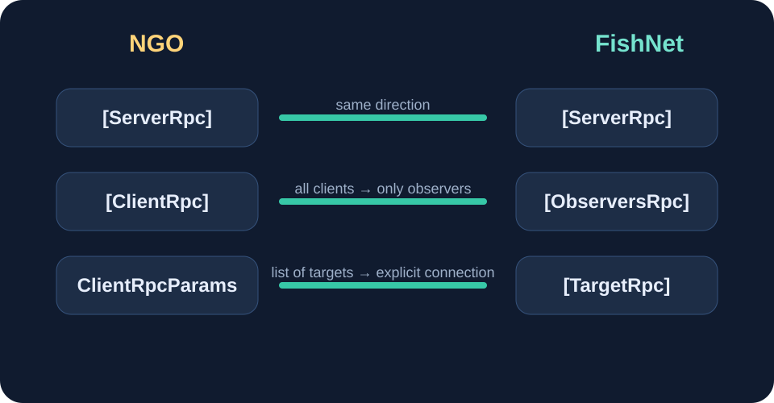
ServerRpc почти не меняется, а ClientRpc превращается в ObserversRpc с более точным смыслом доставки.
Клиент → Сервер:[ServerRpc] остаётся почти тем же.
Сервер → Наблюдатели:[ClientRpc] из NGO переходит в [ObserversRpc].
Сервер → Один клиент: вместо ClientRpcParams и списка адресатов используется [TargetRpc] с NetworkConnection target.
Ключевое отличие
[ObserversRpc] шлёт не всем клиентам подряд, а только тем, кто является observer для объекта. Это не косметическое переименование, а фундаментальное изменение модели доставки.
ServerRpc и ownership
[ServerRpc(RequireOwnership = true)]
void ShootServerRpc(Vector3 direction) {
if (!IsAlive || ammo <= 0) return;
if (Time.time < lastShotTime + cooldown) return;
if (direction.magnitude < 0.1f) return;
SpawnProjectile(direction);
}
Код стрельбы из лекции 3 переносится на FishNet почти без изменения геймплейной логики. Мы меняем API-слой, а не саму архитектуру выстрела.
NGO (Лекция 3)
using Unity.Netcode;
public class PlayerShooting : NetworkBehaviour {
public NetworkObject projectilePrefab;
public Transform muzzle;
void Update() {
if (!IsOwner) return;
if (Input.GetKeyDown(KeyCode.Space))
ShootServerRpc(Camera.main.transform.forward);
}
[ServerRpc(RequireOwnership = true)]
void ShootServerRpc(Vector3 dir, ServerRpcParams p = default) {
var obj = Instantiate(projectilePrefab,
muzzle.position, Quaternion.LookRotation(dir));
obj.SpawnWithOwnership(OwnerClientId);
}
}
FishNet
using FishNet.Object;
public class PlayerShooting : NetworkBehaviour {
public NetworkObject projectilePrefab;
public Transform muzzle;
void Update() {
if (!base.IsOwner) return;
if (Input.GetKeyDown(KeyCode.Space))
ShootServerRpc(Camera.main.transform.forward);
}
[ServerRpc(RequireOwnership = true)]
void ShootServerRpc(Vector3 dir) {
var obj = Instantiate(projectilePrefab,
muzzle.position, Quaternion.LookRotation(dir));
ServerManager.Spawn(obj, Owner);
}
}
Что реально поменялось
IsOwner превращается в base.IsOwner, ServerRpcParams больше не нужен, а SpawnWithOwnership(OwnerClientId) заменяется на ServerManager.Spawn(obj, Owner). Все guard-клозы и бизнес-логика остаются на месте.
11. Observers — Area of Interest
Проблема: все видят всё
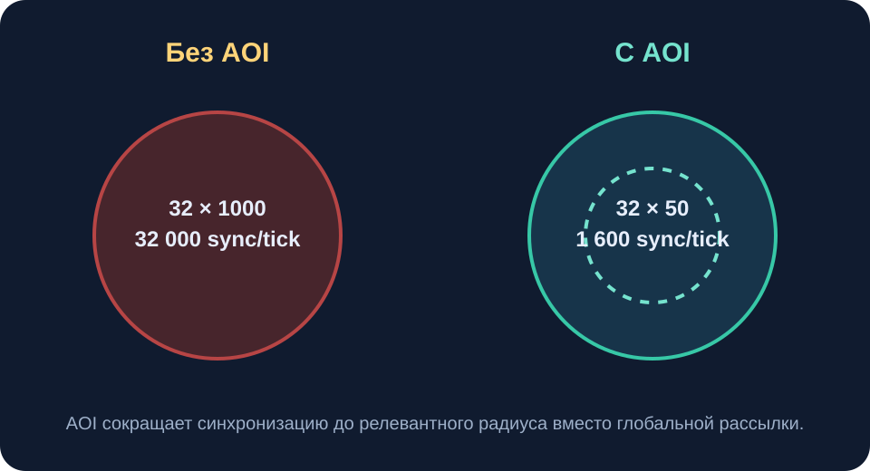
Без AOI сервер синхронизирует всё всем. С AOI каждый клиент получает только релевантный кусок мира.
В NGO любой сетевой объект часто оказывается видим всем клиентам. В открытом мире это сразу бьёт по трафику и CPU. FishNet решает эту задачу через Observers: сервер заранее знает, кому объект действительно нужен.
Что такое Observer
Observer — это клиент, для которого выполнены правила видимости конкретного объекта. Только observers получают SyncVar-обновления и ObserversRpc. Остальные клиенты не получают ничего.
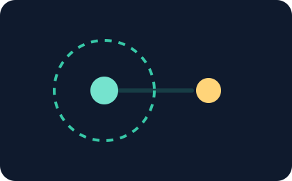
Клиент в зоне
Когда клиент внутри радиуса видимости, объект для него существует и синхронизируется.
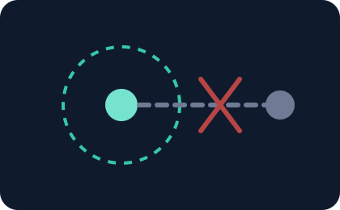
Клиент вне зоны
Когда клиент слишком далеко, объект не попадает в его observer-набор и данные не отправляются.
Вход в зону
При пересечении границы FishNet присылает клиенту актуальное состояние объекта, как при late-join.
12. Встроенные ObserverConditions
DistanceCondition
Максимальная дальность видимости. Особенно полезна для FPS, TPS и проектов с большим числом активных объектов.
SceneCondition
Клиент в одной сцене не получает данные из другой сцены или подуровня.
OwnerOnlyCondition
Подходит для приватных данных: персонального инвентаря, скрытых статов и owner-only UI.
Во многих случаях всё настраивается в Inspector через NetworkObserver и набор conditions. Код вообще не нужен, пока сценарий не выходит за рамки базовой видимости.
Custom ObserverCondition
public class TeamCondition : ObserverCondition {
public override bool ConditionMet(
NetworkConnection conn, bool currentlyAdded, out bool notProcessed) {
notProcessed = false;
int objectTeam = GetComponent<TeamComponent>().TeamId;
int clientTeam = conn.FirstObject
.GetComponent<TeamComponent>().TeamId;
return objectTeam == clientTeam;
}
public override ObserverConditionType GetConditionType()
=> ObserverConditionType.Normal;
}
По тому же принципу строятся командная видимость, stealth-механики, Fog of War и более сложные схемы relevancy.
13. Observers и ObserversRpc
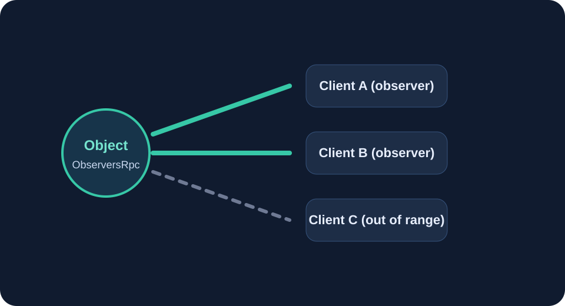
Если объект ограничен observer-условиями, его RPC тоже ограничиваются этим же набором клиентов.
Объект с DistanceCondition:ObserversRpc получают только клиенты, попавшие в радиус.
Объект без observer-ограничений:ObserversRpc воспринимается почти как старый глобальный ClientRpc.
Частая ошибка при миграции
Глобальные события вроде таймера, конца матча или чата внезапно «ломаются» после включения Observers. Причина обычно одна: эти события отправляются с объекта, на который по ошибке повесили DistanceCondition.
14. Чек-лист миграции NGO → FishNet
Удалить пакеты Netcode for GameObjects и связанный transport-слой NGO.
Импортировать FishNet и поднять новый NetworkManager.
Подключить транспорт, обычно Tugboat.
Заменить пространства имён Unity.Netcode на FishNet.Object и FishNet.Object.Synchronizing.
NetworkVariable<T> перенести в [SyncVar].
[ClientRpc] заменить на [ObserversRpc].
OnNetworkSpawn() разложить на OnStartClient() и OnStartServer().
Spawn() и Despawn() перевести на вызовы через ServerManager.
Топ-5 типовых ошибок
Забытый base.IsOwner вместо старого IsOwner.
Механический перенос логики из OnNetworkSpawn() только в OnStartClient(), хотя часть инициализации должна жить на сервере.
Сохранение старых вызовов SpawnWithOwnership и NetworkObject.Despawn.
Отсутствие base.OnStartClient() и других обязательных base-вызовов.
Смешанное состояние проекта, когда сцена уже на FishNet, а часть кода всё ещё на NGO.
Короткий пример PlayerController до и после
NGO:
using Unity.Netcode;
public class PlayerController : NetworkBehaviour {
NetworkVariable<int> health = new(100);
public override void OnNetworkSpawn() {
if (IsOwner) Camera.main.transform.SetParent(transform);
health.OnValueChanged += OnHP;
OnHP(0, health.Value);
}
public override void OnNetworkDespawn() {
health.OnValueChanged -= OnHP;
}
void Update() {
if (!IsOwner) return;
HandleMovement();
}
}
FishNet:
using FishNet.Object;
using FishNet.Object.Synchronizing;
public class PlayerController : NetworkBehaviour {
[SyncVar(OnChange = nameof(OnHP))]
public int health = 100;
public override void OnStartClient() {
base.OnStartClient();
if (base.IsOwner) Camera.main.transform.SetParent(transform);
}
void Update() {
if (!base.IsOwner) return;
HandleMovement();
}
}
15. Добавляем Observers к проекту
Добавить NetworkObserver на каждый сетевой префаб, который не обязан быть глобально видимым.
Назначить DistanceCondition и подобрать рабочую дистанцию под жанр.
Оставить глобальные менеджеры и системные объекты без дистанционных ограничений.
Это сильный инженерный выигрыш: вы сокращаете лишнюю синхронизацию без переписывания всей игры.
16. А что с задержками?
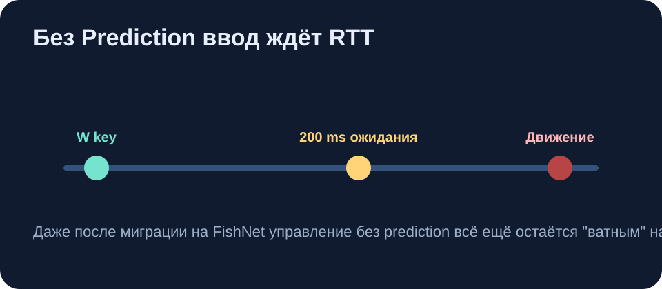
Даже после миграции на FishNet без prediction ввод продолжает ждать RTT.
Если в FishNet включить симуляцию задержки 200 мс и нажать W, персонаж всё равно начнёт двигаться с неприятным запаздыванием. Новый стек улучшает архитектуру, но не отменяет физику сети.
Лекция 6 закрывает именно этот разрыв:
Client-Side Prediction: локальный отклик без ожидания сервера.
Server Reconciliation: корректировка расхождений между предсказанием и серверной истиной.
Lag Compensation: честная стрельба и справедливые проверки попаданий.
Что мы узнали
Почему FishNet интересен индустрии: производительность, декомпозиция, Observers и готовность к prediction.
Как устроена архитектура FishNet и зачем нужны отдельные менеджеры.
Чем [SyncVar] и сетевые коллекции отличаются от модели NGO.
Почему [ObserversRpc] — это не просто переименование старого ClientRpc.
Как Observers решают задачу Area of Interest и экономии трафика.
Как выглядит практический чек-лист миграции NGO → FishNet.
Чек-лист самопроверки
Я понимаю, чем архитектура FishNet отличается от NGO.
Я могу объявить [SyncVar] и объяснить, как работает OnChange.
Я знаю разницу между [ObserversRpc] и [TargetRpc].
Я понимаю, что такое observer и зачем нужен DistanceCondition.
Я могу перевести спавн и despawn на вызовы через ServerManager.
Я понимаю, почему глобальные события нельзя отправлять с объекта, скрытого observer-ограничениями.
Если что-то ломается после миграции
Сначала проверяйте три места: ownership-проверки через base.IsOwner, корректный lifecycle с вызовом base.OnStartClient() и observer-настройки на глобальных объектах.